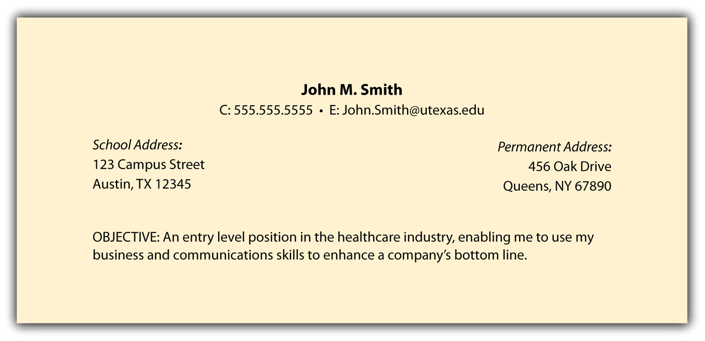

Your résumé header should include four items:
Include your full name. If your first name is difficult to pronounce, you could include your nickname in quotation marks or parentheses (e.g., Xioang “Angie” Kim or Massimo “Mass” Rapini). Names are typically bolded and centered on the page, but aligning your name to the right or left is also appropriate.
You can use your school address or your permanent home address, or both. Most recruiters prefer both because, at times, they may need to send information to both addresses at different times of the year. Clarity is always a very good thing.

Have a professional e-mail address because employers frown upon unprofessional addresses such as greeneyes2@gmail.com or runningguy62@verizon.net. It’s best to use your first name and your last name in a simple e-mail format.
Establish a professional e-mail address as soon as possible (e.g., c.thompson@gmail.com or e.autoris@verizon.net). It’s much more relevant than c.thompson@rutgers.edu, especially if you graduated six months earlier. If you continue your job search after graduation, you might not be permitted to use your school e-mail address, nor should you once you have graduated. Given this, obtaining a professional e-mail address is a good networking opportunity to contact the individuals with whom you’ve been in touch regarding your job search. Inform those individuals and any relevant recruiters that you’ve updated your contact information.
Include only one phone number on your résumé and record a professional voice mail. Do not play music on your voice mail. and speak clearly and succinctly. It’s also recommended that you not answer your cell phone if you are in a loud area, especially when you do not recognize the number. Allow the call to go to voice mail, listen to it in a quiet place, and return the call as soon as possible. It very well could be a recruiter who would not be impressed by you shouting, “What? I can’t hear you!” A professional voice mail might sound like the following: “You’ve reached John Smith at 555.555.5555. Please leave a message and I will call you back as soon as possible.”
Include your name and repeat the phone number to help the recruiter know for certain that the proper person has been reached. Clarity is always helpful and appreciated. Lastly, be sure to check your voice mail on a regular basis, even if you are on vacation.
Recruiters appreciate clarity, and an objective can help a recruiter understand exactly what you offer or what business would best suit your background. Objectives can be very targeted and mention a specific position or can be a bit broader in describing a job function. Whatever objective you choose, it should state what you are looking for and what you have to contribute. It’s not only about you. It’s about what you can do for them. Here are some examples of effective objectives:
Your objective should not ramble past two lines because no recruiter appreciates reading a paragraph-sized objective.
Using the four preceding items, Figure 4.2 "Sample Résumé—Header and Objective" illustrates how our sample résumé looks thus far.
Figure 4.2 Sample Résumé—Header and Objective
